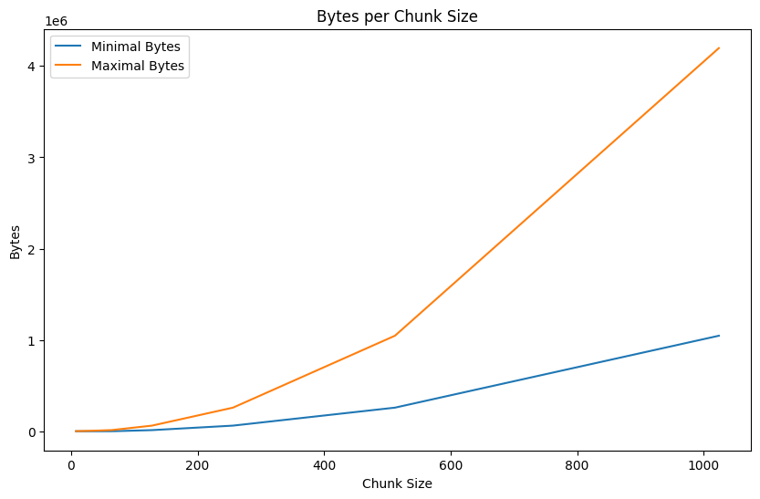
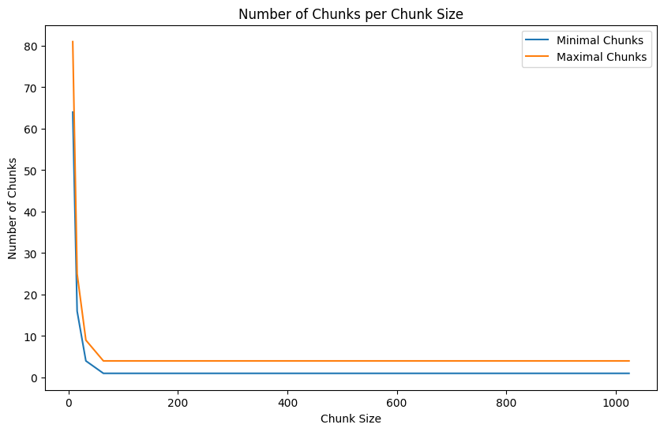

Here you can find the additional information as referenced in the chapters.
| Feature | PyTorch | Lightning |
|---|---|---|
| Device/GPU Handling | Manual device placement (.to(device)), manual multi-GPU management |
accelerator="auto", devices="auto" handles single GPU, multi-GPU (DDP), TPU, CPU fallback |
| Training Loop | Manual train/eval mode, gradient zeroing, loss, backward, optimizer steps | Handled in training_step, validation_step |
| Logging | Manual print or custom logging |
Built-in TensorBoard, WandB, MLflow, auto metric aggregation, progress bars |
| Callbacks | Manual implementation | Built-in model checkpointing, early stopping, learning rate monitoring |
| Multi-GPU Strategies | Manual data parallelism, distributed training, gradient synchronization | Specify strategy parameter in Trainer |
| Profiling & Debugging | Manual profiling setup | Built-in profilers and debugging tools |
| Reproducibility | Manual seed setting everywhere | seed_everything() (Note: manual seed for data loader/workers still needed) |
| Mixed Precision Training | Manual AMP implementation | precision="16-mixed" in Trainer |
| Automatic Sanity Checks | No built-in pre-training validation | Sanity validation batch (model forward pass, shape compatibility, loss calculation). Disable with num_sanity_val_steps=0. |
| Cloud Storage Integration | Manual cloud storage uploads | Easy integration via custom callbacks for checkpoint uploads (e.g., AWS S3, GCS). Prevents data loss, customizable backup strategies. |
Initially, my data was stored in NetCDF files, which are common for scientific data but can be inefficient when working with streaming from cloud storage. The default chunking in these files was not optimized for machine learning, causing unnecessary data to be loaded into memory during training. To address this, I stored everything in Zarr. Zarr is specifically designed for fast cloud-based data access. I will not include the migration in this blog, as it is out of scope, I just want to show that it is important to think about the data formats used.
Zarr v3 Performance Tip
When using Zarr v3, you can achieve a significant speedup by disabling Dask during dataset loading. By setting chunks=None, you bypass Dask's graph-building overhead and allow Xarray to use its internal lazy-indexing. This is often faster because Zarr v3's own storage layer is already optimized for concurrent I/O.
python
# Optimal Zarr v3 loading
dataset = xr.open_zarr(
path,
consolidated=False,
zarr_format=3,
chunks=None
)
When streaming data, the goal is to minimize both the amount of data loaded and the number of individual chunk requests made.
I created a script to (handwavy) calculate the optimal chunk size by analyzing how different chunk dimensions affect data access patterns. For an image of 64x64 pixels:
| chunk_size | minimal_chunks | maximal_chunks | minimal_bytes | maximal_bytes |
|---|---|---|---|---|
| 8x8 | 64 | 81 | 4096 | 5184 |
| 16x16 | 16 | 25 | 4096 | 6400 |
| 32x32 | 4 | 9 | 4096 | 9216 |
| 64x64 | 1 | 4 | 4096 | 16384 |
| 128x128 | 1 | 4 | 16384 | 65536 |
| 256x256 | 1 | 4 | 65536 | 262144 |
| 512x512 | 1 | 4 | 262144 | 1048576 |
| 1024x1024 | 1 | 4 | 1048576 | 4194304 |
The table shows how different chunk sizes affect loading efficiency:
The results show that a 64×64 chunk size (matching the image dimensions) provides the optimal balance:


Number of bytes and chunks for different chunk sizes
Handling the Small File Bottleneck
Optimizing Zarr chunks can inadvertently create millions of small files (inodes) On servers with poor small-file I/O, this can cripple training speed even if your chunk sizes are technically "optimal." A powerful solution is SquashFS, which packs your entire dataset into a single compressed, read-only filesystem image. By mounting this image, your code sees the original directory structure, but the hardware only manages one large file, drastically reducing overhead. This combination of SquashFS and Zarr v3 is particularly effective for static datasets on high-performance clusters where metadata lookups are the primary bottleneck. This is out of scope for this blog, but do reach out if you need help!
Some libraries, like Dask, can parallelize reading within a dataset, providing their own optimization parameters. However, be careful when combining these with PyTorch DataLoader workers, as this can lead to resource contention and diminishing returns.
When working with lazy-loading/streaming data into GPU memory, there are several parameters you might need to optimize:
Parallel Loading Parameters:
Caching Parameters:
I will explain how to optimize these (usecase) parameters in the next section. For more insights on optimizing cloud data loading, see Earthmover's guide to cloud-native dataloaders covering streaming techniques, I/O optimization, and resource balancing. Note that this is relevant for zarr v2. In zarr v3, as mentioned above, we disable dask and set chunks=none for an even bigger speedup.
If you're using Dask, you can also leverage the Dask dashboard to monitor:
Understanding Dask Execution Modes
Dask offers three execution modes, each with different trade-offs:
Single-Threaded Scheduler
Uses dask.config.set(scheduler="single-threaded")
In multi-GPU setups, each process runs its own sequential scheduler
Threaded Scheduler
Uses dask.config.set(scheduler="threads", num_workers=dask_threads)
In multi-GPU setups, be careful of the total thread count (e.g., 8 processes × 4 threads = 32 threads)
Distributed Cluster
Uses LocalCluster and Client to create a full Dask cluster
For a single GPU with limited CPUs (e.g., 20 cores):
For multi-GPU setups (e.g., 8 GPUs with 20 cores):
The key is balancing parallelism against resource constraints. More parallelism isn't always better, especially when resources are shared across multiple GPU processes. Start conservative and scale up while monitoring performance.
Profiling helps you understand where time and resources are spent in your training pipeline. It guides optimization by identifying bottlenecks. The profiler also looks at the data part of the pipeline, so it is a good idea to run it after the data part is done.
Look at the provided script to profile your training loop. Import your dataloader and model modules,
then run the script 3 times with the three profilers:
it stores the output in the output/profiler/{config_name}/profiler_logs folder.
uv run python profiler.py
Understanding what the profiler outputs mean is key to optimizing your training pipeline. Here’s what to look for in each profiler and how to make sense of the data.
fit-simple_profiler_output.txt – Summary View (Simple Profiler)*_dataloader_next, __next__) — these often take more time than expected.run_training_epoch will typically be a large portion; the key is to ensure they're not dwarfed by overheads.fit-advanced_profiler_output.txt – Line-Level Viewpt.trace.json – Chrome Trace Viewer (PyTorch Profiler)chrome://tracing..json file.